f <- tempfile()
download.file("https://github.com/jgabry/bayes-vis-paper/blob/master/bayes-vis.RData?raw=true", f)
GM <- get(load(f))
GM@data <- GM@data |>
mutate(
log_pm25 = log(pm25),
log_sat = log(sat_2014)
)Visualizing Predictions
Reading (Chapter 8.1 - 8.2) Code
Items marked with \(^\dagger\) will not be tested on exams.
When we read data analysis reports or attend statistical research seminar, we are often bombarded by numerical outputs from models, like \(p\)-values, test set accuracies, parameter estimates, or \(R^2\) values. This is all helpful for keeping everyone honest, but if we want to build intuition (and improve) our models, then it really helps to visualize them, and not simply use numerical summaries.
In fact, we can integrate visualization throughout the model building process. In data science, there is a cliche that visualization is mainly useful at the very beginning (exploratory data analysis) or end (pretty presentations) of a study. But careful modeling requires visualization at all steps.
UW-Madison’s Statistics Department was founded by George Box, one of the most important statisticians of the 20th century. Among many methdological contributions, he is famous for saying
All models are wrong, but some are useful.
I’ve always found it a bit unfortunate that this quote became so popular without the related idea, “Box’s Loop,” becoming similarly famous. The idea of the Loop is that we should seek out limitations in our models (“all models are wrong”) but then use that to suggest improvements.
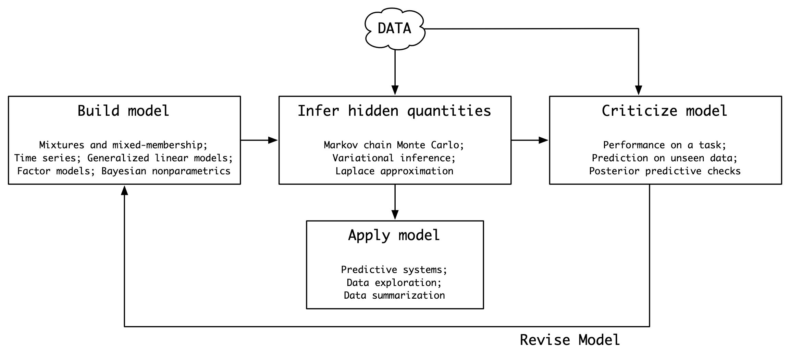
If this seems a little abstract, consider this example from the reading. The 538 blog releases election forecasts based on statistical models trained on polling and historical election data. We’ll consider a model they built just before the 2020 US Presidential Election between Joe Biden and Donald Trump. Their model supports simulation, and could generate hypothetical election results. For each of the simulated datasets, we get a percentage breakdown Biden vs. Trump across all states.
If we average the statewise results across all the simulated elections, then the model makes sense, considering voting patterns in recent elections. For example, California reliably votes Democrat (Biden) while Wyoming reliably votes Republican (Trump).
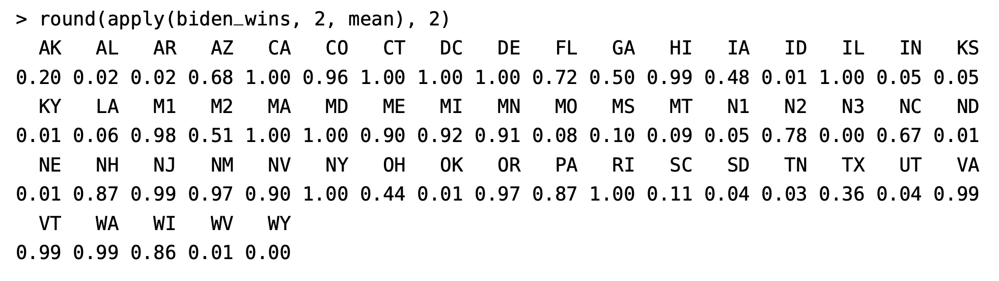
Further, for particular pairs of states, the correlations match our expectations. For example, Wisconsin and Pennsylvania are traditionally “swing” states, which can go either way. If we plot the simulated outcomes against one another, then these states outcomes’ are positively correlated, which is what we would expect if there were events (in the time between the forecast and the election) that either improved or damaged their chances consistently across both states.
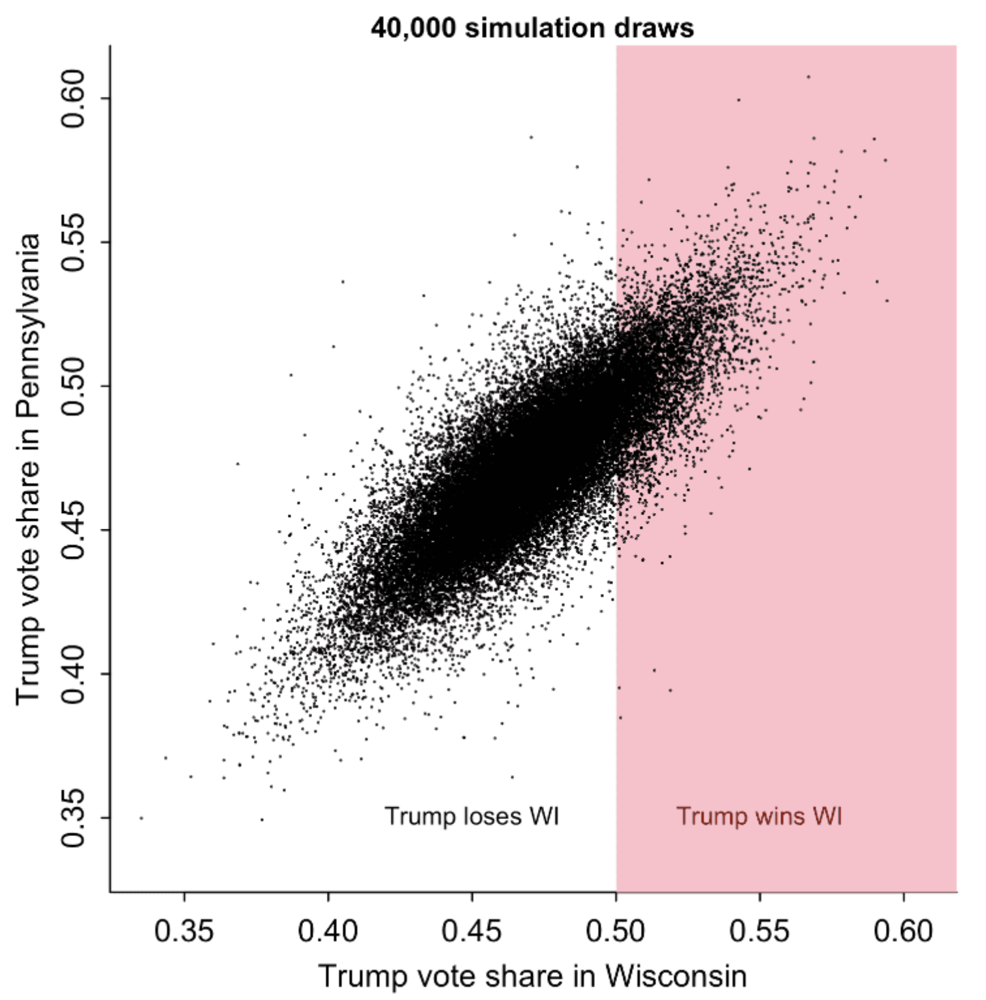
But for other pairs, the results are suspicious. For example, the simulations suggest that the outcomes in Washington (a Democrat-leaning state) and Mississippi (a Republican-leaning state) are negative correlated. This is strange, because it means that if Trump won Washington, he would be more likely to lose Mississippi. You would think that if he had won a historic upset in Washington, then surely he would also win Mississippi.
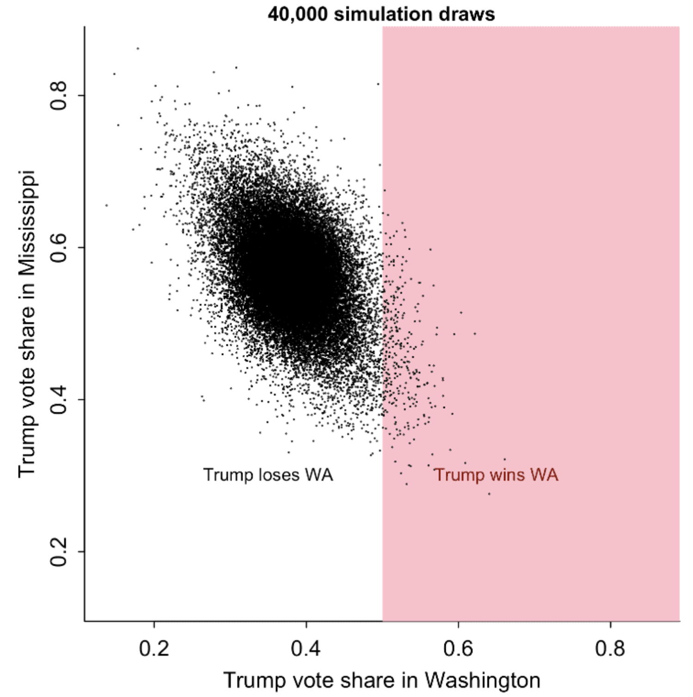
The authors of our reading argue that this negative correlation is a technical artifact of the statistical model used by the 538 team, and not a real pattern from the data. It turns out that the default statistical choice the team most likely used is not compatible with our domain knowledge. This is a place where defaults could be adapted to obtain a more realistic model; i.e., it motivates moving through an interation of Box’s loop.
Probabilistic Models
Notation
If the election example feels a bit ad hoc to you, then you have a good instinct for statistics. One of the goals of statistical research is to formalize good intuition using mathematical language. In this way, we can ensure that good ideas that appear in one specific application can be easily adapted to other problems.
Let’s establish notation. A simulation model is one that allows us to draw replicate datasets \(y_{i}^{\text{rep}}\) given an observed dataset \(y\), \[ y_{1}^{\text{rep}}, \dots, y_{n}^{\text{rep}} \sim p\left(y^{\text{rep}} \vert y\right). \tag{1}\] You should think of each \(y_{i}^{\text{rep}}\) and \(y\) as vectors, because they represent an entire dataset.
In our reading, the probability in Equation 1 is called the posterior predictive distribution. The hope is that after having observed the real dataset \(y\), the distribution \(p\left(y^{\text{rep}} \vert y\right)\) should allow us to simulate new replicates that look similar to the real data.
In contrast, the prior predictive distribution, denoted \(p\left(y^{\text{rep}}\right)\), describes how we would simulate new datasets before having observed any real data \(y\). It encodes basic facts about the problem setting (e.g., plausible ranges of the outcome) but not the more specific relationships that are unknown in advance. \[ y_{1}^{\text{rep}}, \dots, y_{n}^{\text{rep}} \sim p\left(y^{\text{rep}}\right). \tag{2}\]
Exercise: You are working with a team on a model of bikesharing demand. A colleague interprets the posterior predictive as the “model’s prediction of future bike demand.” What are they misunderstanding? How would you explain the posterior predictive to them?
Running Example
As our running example, we will use a PM2.5 monitoring dataset. PM2.5 is a type of air pollution that can cause health problems. High-quality weather station data apply in the areas around the weather station, but don’t give any information about what happens in the areas between stations. In contrast, satellite data give global coverage, but they are lower quality. In the last few decades, it’s become popular to train models that use high quality station measurements to adjust satellite data, which gets us closer to the best of both worlds. If it works well, it could be used to monitor PM2.5 levels at global scale.
The simplest model simply fits \(\text{station} = a + b \times \text{satellite}\) at locations where they are both available. This model was used in practice by the Global Burden of Disease project until 2016.
ggplot(GM@data, aes(log_sat, log_pm25)) + geom_point(size = 0.8, alpha = 0.7) + labs(x = "log(satellite)", y = "log(ground station)", col = "WHO Region") + coord_fixed()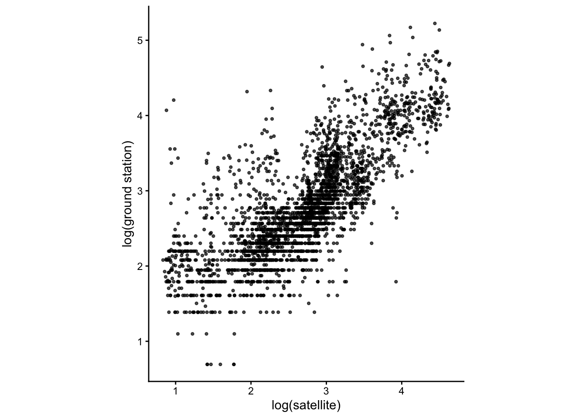
When we plot these two variables against one another, we can see that we won’t be able to obtain good predictions for the station measurements using the satellite data alone. What features might we include to improve the model fit?
One hypothesis is that country region is an important factor. Below, we fit regression lines separately for different country super-regions, as specified by the WHO. The fact that the slopes are not the same in each region means that we should modify our model to have a different slope in each region.
ggplot(GM@data, aes(log_sat, log_pm25)) +
geom_point(aes(col = super_region_name), size = 0.4, alpha = 0.7) +
geom_smooth(aes(col = super_region_name), method = "lm", se = FALSE, size = 2) +
scale_color_brewer(palette = "Set2") +
labs(x = "log(satellite)", y = "log(ground station)", col = "WHO Region") +
coord_fixed()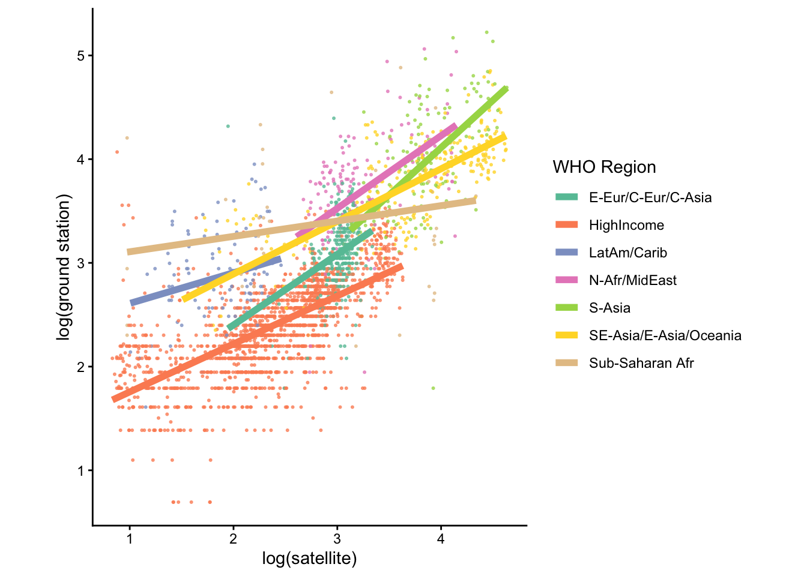
The WHO categories are somewhat arbitrary. Maybe there are better country groupings, tailored specifically to the PM2.5 problem? One idea is to cluster the ground stations based on PM2.5 level and use these clusters as a different region grouping.
average <- GM@data |> group_by(iso3) |> summarise(pm25 = mean(pm25)) clust <- dist(average$pm25) |> hclust() |> cutree(k = 6) GM@data$cluster_region <- as.character(clust[match(GM@data$iso3, average$iso3)]) ggplot(GM@data, aes(log_sat, log_pm25)) + geom_point(aes(col = cluster_region), size = 0.4, alpha = 0.7) + geom_smooth(aes(col = cluster_region), method = "lm", se = FALSE, size = 2) + scale_color_brewer(palette = "Set2") + labs(x = "log(satellite)", y = "log(ground station)", col = "Cluster Region") + coord_fixed()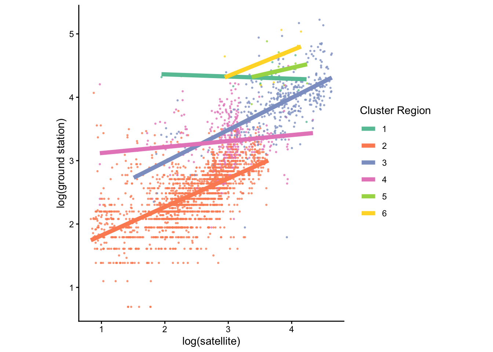
Which model should we actually use? In some of your other classes, you might have used cross-validation / test set error. While this is useful, it doesn’t necessarily give us new ideas for how to improve the model (it just helps us evaluate our existing ideas). An alternative which often brings more insight is to simulate from the model and see which aspects of the real data it can (and cannot) capture.
Prior predictive distributions
The prior predictive distribution can be used to decide whether certain model families are reasonable candidates for a problem, before fitting the models to actual data. If the simulated datasets are plausible, then the overall model family is a reasonable one. If they are not, then the model family should be modified.
For example, in the example below, we simulate datasets two types of model assumptions, based on “vague” and “informative” priors, respectively (don’t worry about what these hyperparameters mean, for our purpose, they are just two model choices). The first type of assumption is quite common in practice, and a version of this is likely what the 538 team used for their election problem. However, in the PM2.5 example, the simulated data using the vague prior is not even remotely plausible. To see this, we can use the
ppc_scatterfunction1 from thebayesplotpackage, which takes the real and simulated data as arguments.# function to simulate from the first modeling assumption (vague prior) prior1 <- function(Nsim) { tau0 <- 1 / sqrt(rgamma(1, 1, rate = 100)) tau1 <- 1 / sqrt(rgamma(1, 1, rate = 100)) sigma <- 1 / sqrt(rgamma(1, 1, rate = 100)) beta0i <- rnorm(7, 0, tau0) beta1i <- rnorm(7, 0, tau1) beta0 <- rnorm(1, 0, 100) beta1 <- rnorm(1, 0, 100) epsilon <- rnorm(Nsim, 0, sigma) data.frame( log_pm25 = GM$log_pm25, region = GM$super_region_name, sim = beta0 + beta0i[GM$super_region] + (beta1 + beta1i[GM$super_region]) * GM$log_sat + epsilon ) }# generate 12 samples prior1_data <- replicate(12, prior1(Nsim = nrow(GM@data))$sim) |> t() # plot them ppc_scatter( y = GM$log_pm25, yrep = prior1_data, size = 0.4, alpha = 0.1, facet_args = list(scales = "free_x", ncol = 4) ) + labs(x = "Simulated station data", y = "True station data")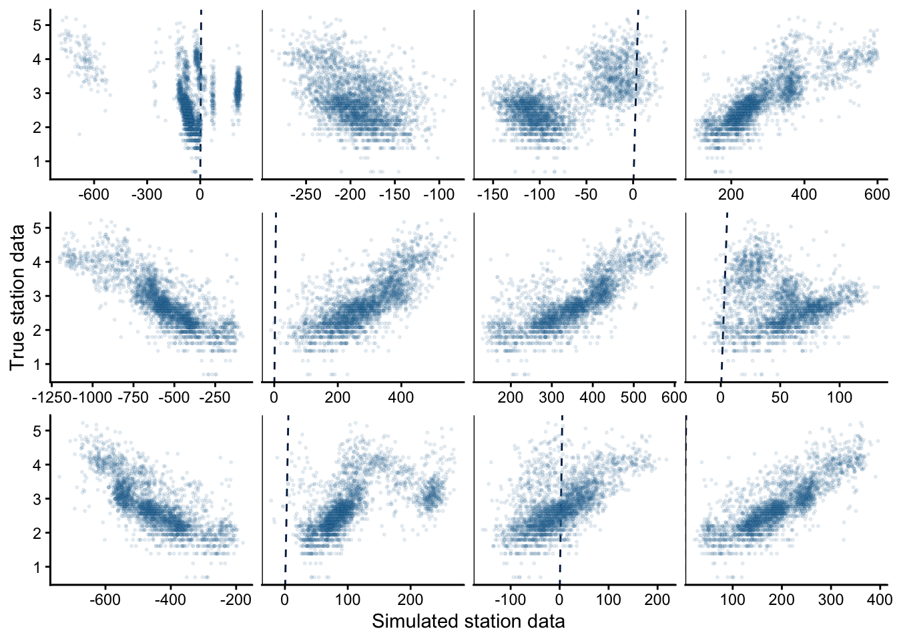
Prior predictive samples from the vague prior are on a completely implausible scale. The block below instead simulates from the informative prior. The resulting samples are much more plausible, lying in a comparable range to the true data. However, note that the samples from the prior predictive do not need to look exactly like the observed data. If they did, then we wouldn’t have to collect real data at all! All we ask is that they are roughly compatible with our prior knowledge of the problem setting.
# function to simulate from second modeling assumption (informative) prior2 <- function(Nsim) { tau0 <- abs(rnorm(1, 0, 1)) tau1 <- abs(rnorm(1, 0, 1)) sigma <- abs(rnorm(1, 0, 1)) beta0i <- rnorm(7, 0, tau0) beta1i <- rnorm(7, 0, tau1) beta0 <- rnorm(1, 0, 1) beta1 <- rnorm(1, 1, 1) epsilon <- rnorm(Nsim, 0, sigma) data.frame( log_pm25 = GM$log_pm25, region = GM$super_region_name, sim = beta0 + beta0i[GM$super_region] + (beta1 + beta1i[GM$super_region]) * GM$log_sat + epsilon ) } prior2_data <- replicate(12, prior2(Nsim = nrow(GM@data))$sim) |> t() ppc_scatter( y = GM$log_pm25, yrep = prior2_data, size = 0.4, alpha = 0.1, facet_args = list(scales = "free_x", ncol = 4) ) + labs(x = "Simulated station data", y = "True station data")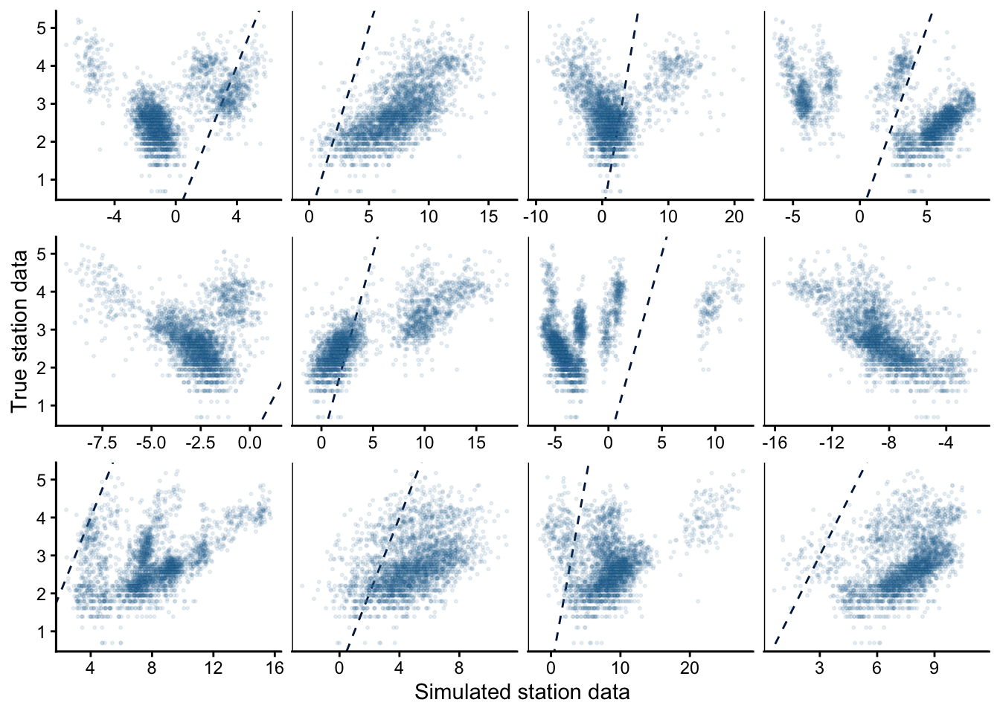
Prior predictive samples from the informative prior seem more plausible though they do not (and should not) exactly fit the true data. Exercise: In a bikesharing project, imagine that your data had rows specifying the hour of the day and total bike demand at that hour. How might you specify a prior predictive for a model that’s supposed to predict bike demand from hour of the day? How might you extend your approach if other variables were present (e.g., outdoor temperature or workday vs. weekday)?
Exercise: A closely related idea to prior predictive checks is to visually assess model families using the “lineup” plot. The idea is to embed the real dataset in a lineup of simulated datasets based on the model’s assumptions. If you can easily spot the real dataset, then there is an opportunity for improvement. Try this with the first plot here or bottom plot here.
Posterior predictive distributions
Once we have landed on a model family that gives plausible prior predictive samples, we can fit the model. To evaluate its quality, we can use the posterior predictive, which is just like the prior predictive, except that draws samples after having fit the model to the observed data.
The code below fits three models with the
brmspackage2. The first model fits a linear model with random slope and intercept terms, but assumes the effects are shared across the all countries. The next two variations fit separate slopes and intercepts within each WHO region ((1 + log_sat || super_region_name)) and custom cluster ((1 + log_sat || cluster_region)). The way we read this is that the term after||defines groups and the terms before it define parameters that depend on those groups. Thelog_satterm is the effect associated with thelog_satfeature (slope in our scatterplots above) and1specifies the intercept.The
priors_lmvariable below defines the same prior asprior2from before, but withbrmssyntax (not just base R code). It’s a technicality needed to get the model to fit, not an essential point about visualizing prior and posterior predictives.dir.create("fits", showWarnings = FALSE) priors_lm <- c( prior(normal(0, 1), class = "b", coef = "Intercept"), prior(normal(1, 1), class = "b", coef = "log_sat"), prior(normal(0, 1), class = "sigma") ) priors_hier <- c(priors_lm, prior(normal(0, 1), class = "sd")) models <- list( "lm" = brm( log_pm25 ~ 0 + Intercept + log_sat, data = GM@data, prior = priors_lm, chains = 1, file = "fits/pm25_lm" ), "regions" = brm( log_pm25 ~ 0 + Intercept + log_sat + (1 + log_sat || super_region_name), data = GM@data, prior = priors_hier, chains = 1, file = "fits/pm25_regions" ), "clusters" = brm( log_pm25 ~ 0 + Intercept + log_sat + (1 + log_sat || cluster_region), data = GM@data, prior = priors_hier, chains = 1, file = "fits/pm25_clusters" ) )The code above takes a bit of time, about 10 minutes. Afterwards, it gets saved to the
fitsdirectory. To simulate new PM2.5 data from the fitted models, we callposterior_predict()on them. This is done in the block below. Note that, compared to the prior predictive, the posterior predictive is much more closely related to the underlying dataset, which makes sense, because it has been fitted to it.pp_check( models$clusters, type = "scatter", ndraws = 12, size = 0.4, alpha = 0.1, facet_args = list(scales = "free_x", ncol = 4) ) + labs(x = "Simulated station data", y = "True station data")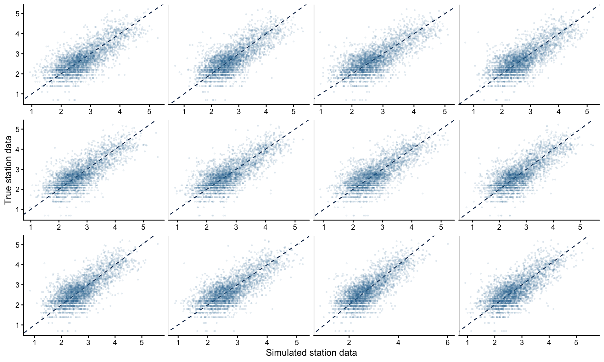
Samples from the posterior predictive in the cluster-based model. We can next define test summaries to see whether properties of the real data are captured by the posterior predictive distribution. In the block below, we compute the skewness for each simulated \(y^{\text{rep}}\) from the three different models. These skewnesses are plotted as histograms, with the true dataset’s skewness indicated by a vertical line. It seems that the model that uses clustering to define regions is able to simulate datasets with skewness similar to that in the real dataset.
skew <- function(x) { xdev <- x - mean(x) n <- length(x) r <- sum(xdev^3) / sum(xdev^2)^1.5 r * sqrt(n) * (1 - 1 / n)^1.5 } plots <- imap(models, ~ pp_check(.x, type = "stat", stat = skew, binwidth = 0.01) + ggtitle(.y)) wrap_plots(plots)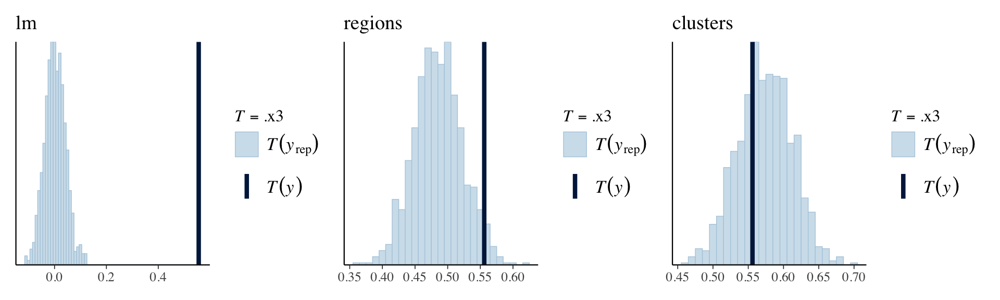
Posterior simulated skewness according to the three different models. According to this summary, it seems like the
clustersmodel is the best. It gives simulated datasets whose skewness values match those that we observed in the real data. Of course, someone could call into our question the choice of using skewness over other test statistics. But we can at least have a productive debate by suggesting and evaluating different test statistics.Exercise: Continuing the bikesharing example, what test summaries would you define to see how well the posterior predictive datasets match the real data? Sketch the outputs from a model that would passes/fails the test.
So far, we’ve worked with models that directly support simulation. This is actually a relatively broad class. It includes the Bayesian models discussed in the reading, of course, and also the humble linear model.
x <- seq(-1, 1, length.out = 10) y <- 2 * x + 0.1 * rnorm(10) fit <- lm(y ~ x) simulate(fit, nsim = 8)sim_1 sim_2 sim_3 sim_4 sim_5 sim_6 1 -1.9451903 -1.98975729 -2.0257283 -1.8773976 -1.9682019 -1.9779109 2 -1.6379162 -1.57454425 -1.4806168 -1.4901730 -1.4974965 -1.5280357 3 -1.2368340 -0.99437864 -1.0598506 -1.1698159 -1.2306425 -1.0777452 4 -0.6983337 -0.80430678 -0.7248407 -0.8372840 -0.6681906 -0.5543370 5 -0.2511139 -0.04256831 -0.4842365 -0.2448389 -0.3506367 -0.2219253 6 0.2374614 0.20707081 0.1210030 0.2629631 0.2018739 0.2397630 7 0.4759680 0.65914888 0.5665632 0.6716037 0.5937117 0.6323241 8 1.1055168 0.93442278 1.0358997 0.9318135 1.1046414 0.9826161 9 1.2480122 1.35902300 1.3253062 1.3868904 1.5290620 1.4144556 10 1.8752603 1.84882786 1.9554769 1.8118326 1.9140802 1.9450419 sim_7 sim_8 1 -1.8660406 -2.01945836 2 -1.5617944 -1.48851730 3 -1.0871275 -1.27798872 4 -0.7210214 -0.61045684 5 -0.2554531 -0.28322675 6 0.1756034 0.05474607 7 0.6237121 0.59548957 8 0.9170147 0.94340919 9 1.5572177 1.50051699 10 2.0222677 1.84280030Perhaps surprisingly, it even includes advanced AI models, like image generation models and LLMs (which, after all, are just simulating text).
That said, not all models support simulation. For example, if we fit a random forest model, we can ask for predictions at any test point \(x\), but we can’t ask it to simulate new datasets. For the rest of this note, we’re going to focus on how we can use visualization to analyze these types of models, which let us query test points for predictions but can’t simulate.
Explaining Black Boxes
Specifically, we’ll focus on Partial Dependence Profiles (PDP) and Individual Conditional Expectation (ICE) curves. They are general-purpose visualizations that attempt to explain how the model relates a predictor variable/set of predictor variables with the response.
Partial dependence profiles were first introduced as a minor point in an influential paper about gradient boosting (Friedman 2001). Let \(f\) be the learned black box function. Let \(x\) be its \(D\)-dimensional input. The idea is to ask how \(f\) changes as we vary the \(d\)th coordinate over its range. We need to do something with the remaining coordinates. The idea of PDP is to average across them.
\[ \text{PDP}_d(z) = \mathbb{E}_{p(x_{-d})}\left[f({\color{#69a4ac} x_d = z}, x_{-d})\right] \approx \frac{1}{N}\sum_{n=1}^N f({\color{#69a4ac} x_d = z}, x_{n, -d}) \]
The highlighted part refers to manually intervening on the \(d^{th}\) coordinate and setting it to \(z\). If we evaluate this average across many different values of \(z\), we get a PDP curve. Note that for each value \(z\), we compute an average across the entire dataset, which can get slow.
Here is some geometric intuition. We take the original samples, manually set all their \(d^{th}\) coordinates to \(z\), evaluate the function \(f\), and then average.
Evaluating the PDP at a single value \(z = x_d^*\) We repeat this for many \(z\)’s to trace out the partial dependence curve.
Repeating this process across many \(z\) lets us trace out a \(\text{PDP}_d(x_d)\) curve.
Individual Conditional Expectations
ICE plots consider each term in the PDP formula as its own function of \(z\).
\[ h_n(z) := f(x_d = z, x_{n, -d}) \]
This has the nice “Ceteris Paribus” interpretation. For each sample, it traces out the curve where the \(d\)th coordinate is set to different values \(z\) but all other coordinates are held fixed.
The key insight is that these curves can be meaningful on their own. The averaging step in PDP can mask some meaningful variation in model predictions. This is especially useful for discovering interactions. For example, here are ICE curves for a model trained to predict survival with the Titanic dataset. The age effect is very different for crew vs. passengers.
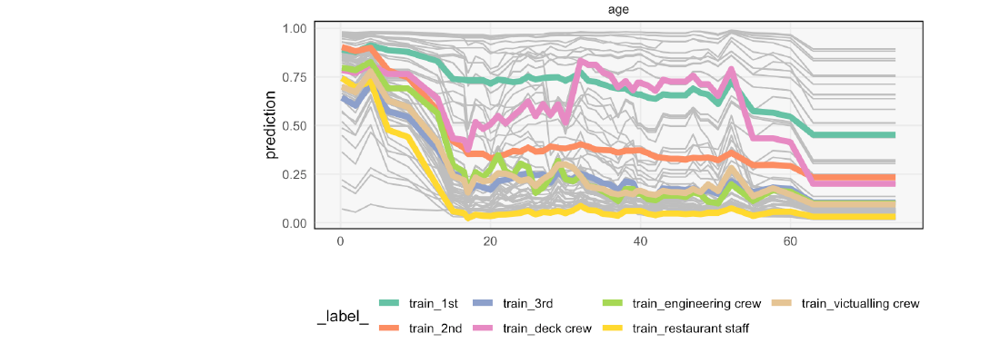
ICE curves for a survival model fit to the Titanic dataset, colored by passenger/crew class. Exercise: Figure 2D in this paper gives the PDP profile for what a random forest model learned about the relationship between atmospheric carbon dioxide (
Global_pCO2) the probability of observing a certain type of phytoplankton. You are serving as the statistical reviewer for this paper, and the journal editor doesn’t understand what this plot means. How would you explain it, and what checks would you recommend to ensure any interpretations from it are reliable?
Example
Let’s consider how ICE and PDP can be used to understand a model fitted to the Titanic dataset. This is a dataset that was used to understand what characteristics survivors of the Titanic disaster had in common. It’s not obvious in advance which characteristics of passengers made them more likely to survive, so a model is fitted to predict survival.
data(titanic) titanic <- select(titanic, -country) |> na.omit() |> mutate(survived = as.numeric(survived == "yes")) x <- select(titanic, -survived) fit <- gbm( survived ~ ., data = titanic, distribution = "bernoulli", n.trees = 100, interaction.depth = 8, shrinkage = 0.1, n.minobsinnode = 10, verbose = FALSE )Next, we can compute the ICE curves using the
DALEXpackage. We are showing the relationship between age and survival, though any subset of variables could be requested. The bold curve is a Partial Dependence (PD) profile. Each of the other curves corresponds to a passenger, though only a subsample is shown. The curves are obtained by fixing all the characteristics of the passanger except for age, and then seeing what happens to the prediction when the age variable is increased or decreased.explanation <- explain(model = fit, data = x, y = titanic$survived)Preparation of a new explainer is initiated -> model label : gbm ( default ) -> data : 2179 rows 7 cols -> target variable : 2179 values -> predict function : yhat.gbm will be used ( default ) -> predicted values : No value for predict function target column. ( default ) -> model_info : package gbm , ver. 2.3.1 , task classification ( default ) -> predicted values : numerical, min = 0.0167047 , mean = 0.3269947 , max = 0.9862975 -> residual function : difference between y and yhat ( default ) -> residuals : numerical, min = -0.9268066 , mean = -0.001616079 , max = 0.9485051 A new explainer has been created!profile <- model_profile(explainer = explanation) plot(profile, geom = "profiles", variables = "age")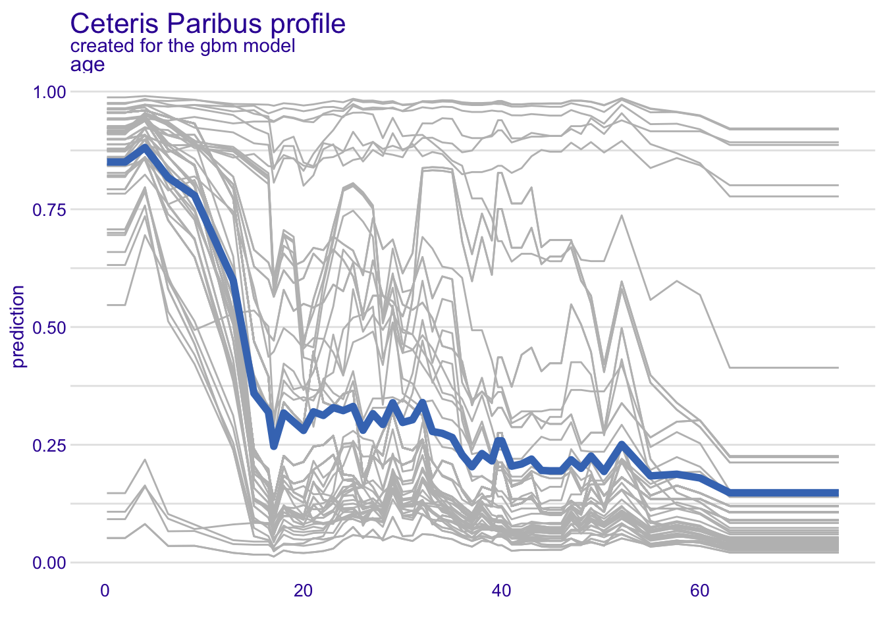
It seems that children had the highest probability 2 of survival. The relationship is far from linear, with those between 40 and 60 all having about the same probabilities. Notice that the profiles are vertically offset from one passenger to another. This is because, aside from age, each passenger had characteristics that made them more or less likely to survive.
Some details about the code. The
explainfunction takes the fitted model and original dataset as input. It returns an object with many kinds of model summaries. To extract the ICE curves from these summaries, we usemodel_profile. The output of this function has been designed so that calling plot withgeom = "profiles"will show the ICE curves.
Interactions
We say that there is an interaction between variables \(j\) and \(j^{\prime}\) if the relationship between \(x_{j}\) and \(y\) is modulated by variable \(j^{\prime}\). For example, in the figure below, the slope of cross-sections across \(j\) depends on \(j^{\prime}\).
Using the language of partial dependence profiles, the figure above means that the shape of the ICE curve in \(j\) depends on the particular setting of \(j^{\prime}\). This motivates the use of Grouped PD profiles, where we compute several PD profiles in \(j\), restricting attention to PDP profiles whose value \(x_{j^{\prime}}\) lies within a prespecified range.
To illustrate, we revisit the ICE curves for age from the Titanic dataset. Below, the profiles are grouped according to the class of the ticket holder. The result shows that the relationship between age and survival was not the same across all passengers. For all classes, there was a decrease in survival probability for adults, but the dropoff was most severe for crew members.
profiles <- model_profile(explainer = explanation, groups = "class") plot(profiles, geom = "profiles", variables = "age") + scale_color_brewer(palette = "Set2")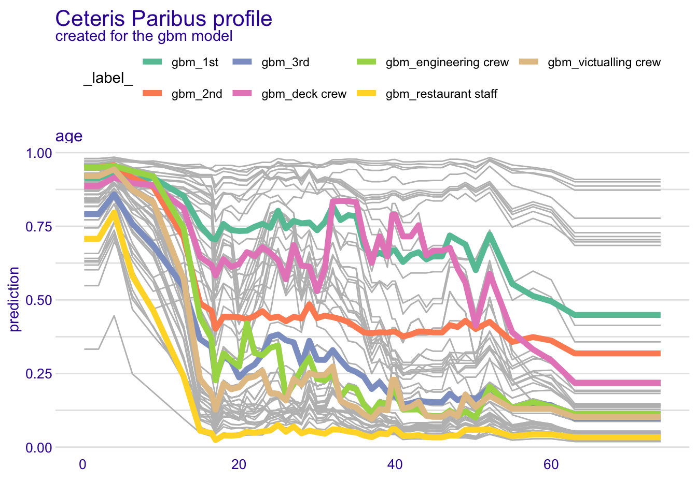
Grouping the ICE curves by ticket class reveals an interaction effect with age in the Titanic dataset. What should we do if there are many input variables and we don’t have a priori knowledge about which variables \(j^{\prime}\) might be interacting with \(j\)? One idea is to try to discover relevant interactions by clustering the original set of ICE curves.
In more detail, we can compute the ICE curves for all the samples, and then see whether there are subsets of profiles that all look similar. If we find features \(j^{\prime}\) that characterize these groupings, then we have found features that interact with \(j\) (with respect to the fitted model \(f\)). The plot below shows the same profiles as above, but clustering directly. It seems to recover the interaction between age and class, even though we have not explicitly provided this grouping variable.
profiles <- model_profile(explainer = explanation, variables = "age", k = 3) plot(profiles, geom = "profiles", variables = "age") + scale_color_brewer(palette = "Set2")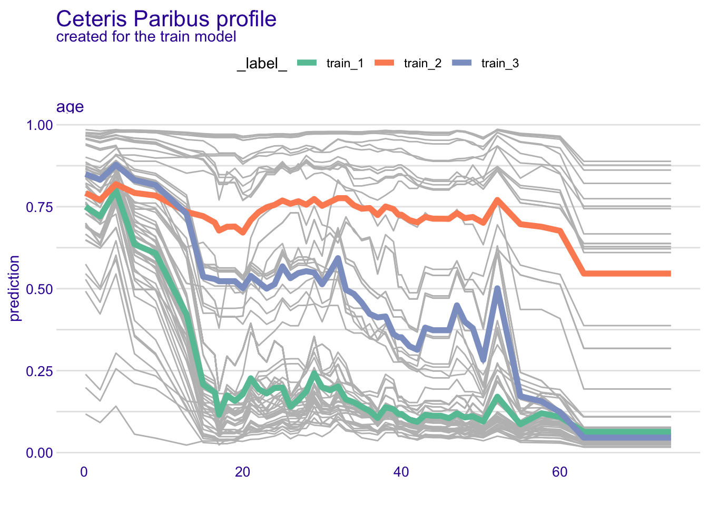
Discovered groupings in the ICE curves for age reveals an interaction effect.
Model Comparison
\(^\dagger\) The comparison of different models’ PD profiles can be used to,
- Validate a simple model
- Guide the design of new features, and
- Characterizing overfitting PD profiles that are used to compare different models are sometimes called “Contrastive” PD profiles.
\(^\dagger\) To validate a simple model, we can compare its PD profiles with those of a more sophisticated model. We will illustrate this by fitting linear and gradient boosting models to a dataset of apartment prices3. Given various properties of an apartment, the goal is to determine its price. The code below fits the two models and extracts their ICE and PD profiles.
data(apartments) x <- select(apartments, -m2.price) profiles_lm <- lm(m2.price ~ ., data = apartments) |> explain(data = x, y = apartments$m2.price, label = "LM") |> model_profile()Preparation of a new explainer is initiated -> model label : LM -> data : 1000 rows 5 cols -> target variable : 1000 values -> predict function : yhat.lm will be used ( default ) -> predicted values : No value for predict function target column. ( default ) -> model_info : package stats , ver. 4.6.0 , task regression ( default ) -> predicted values : numerical, min = 1781.848 , mean = 3487.019 , max = 6176.032 -> residual function : difference between y and yhat ( default ) -> residuals : numerical, min = -247.4728 , mean = -1.07525e-12 , max = 469.0023 A new explainer has been created!profiles_rf <- ranger(m2.price ~ ., data = apartments) |> explain(data = x, y = apartments$m2.price, label = "RF") |> model_profile()Preparation of a new explainer is initiated -> model label : RF -> data : 1000 rows 5 cols -> target variable : 1000 values -> predict function : yhat.ranger will be used ( default ) -> predicted values : No value for predict function target column. ( default ) -> model_info : package ranger , ver. 0.18.0 , task regression ( default ) -> predicted values : numerical, min = 1832.936 , mean = 3488.263 , max = 6158.635 -> residual function : difference between y and yhat ( default ) -> residuals : numerical, min = -434.4113 , mean = -1.243823 , max = 597.1672 A new explainer has been created!\(^\dagger\) The PD profile below shows that the random forest learns linear relationships with price for both the surface and floor variables. If all the effects were like this, then we would have a good reason for preferring the linear model.
plot(profiles_lm, profiles_rf, variables = c("surface", "floor")) + scale_color_brewer(palette = "Set2")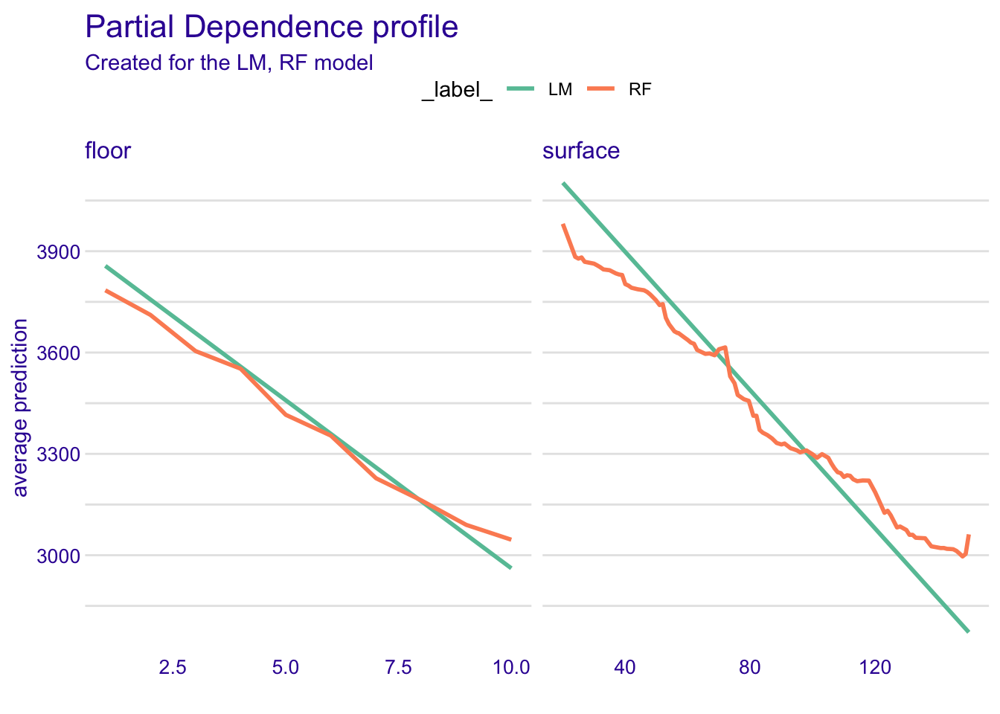
A contrastive PD display suggests that the floor and surface features are linearly related with apartment price. \(^\dagger\) When making the comparison between a simple and a complex model, certain discrepancies might become apparent. For example, important nonlinearities or interactions might be visible from the PD profiles of the complex model. This information can guide the design of new features in the simpler model, so that it can continue to be used. This is exactly the case in the apartments dataset above (there is a strong nonlinear relationship for the construction year variables). This suggests that, if a linear model is still desired, then a new feature should be defined that identifies whether the apartment was built between 1935 and 1990.
plot(profiles_lm, profiles_rf, variables = "construction.year") + scale_color_brewer(palette = "Set2")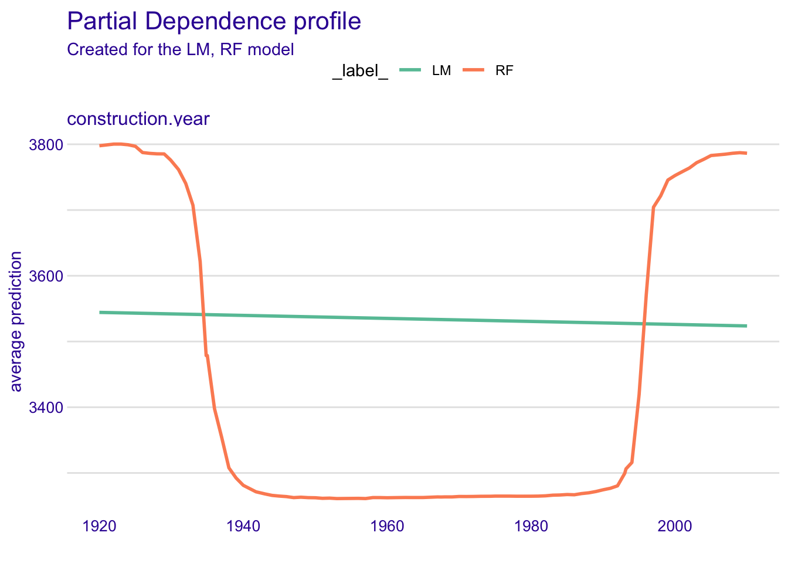
The random forest learns a nonlinear relationship between construction year and apartment price. This suggests designing new features to include in the linear model. \(^\dagger\) Suppose you have found that a model is overfitting (e.g., by finding that it’s training error is much lower than its test error). One way to address this overfitting is to compare the PD profiles between the simple and complex models. If the profiles are very different for one of the features, then that feature may be the source of overfitting.
Objectives
- Recall Box’s Loop and explain the role of visualization within it.
- Distinguish between prior and posterior predictive distributions, and explain what questions the associated visualizations are well-suited to answering.
- Interpret the results from
ppc_scatterapplied to either prior or posterior predcitive distributions. - Explain each part of the
pp_checkvisualization of test summaries from real and simulated datasets, and use this to choose between candidate models. - Given a small dataset and model predictions, compute a partial dependence profile by hand.
- Compare and contrast PDP profiles and ICE curves, and provide an example where PDP alone may mask patterns that are visible in ICE.
- Accurately interpret visualizations outputs generated using
explain()andmodel_profile()from theDALEXpackage.
References
Friedman, Jerome H. 2001. “Greedy Function Approximation: A Gradient Boosting Machine.” Annals of Statistics, 1189–232.
Footnotes
PPC stands for “Posterior Predictive Check” but it also applies to prior predictives, like here.↩︎
In any HW or exam questions, we will give you
brmscode. You don’t need to know how to run the models, just how to visualize the simulated samples.↩︎It is a simulated dataset, but designed to reflect properties of a real dataset.↩︎